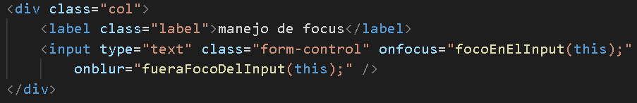
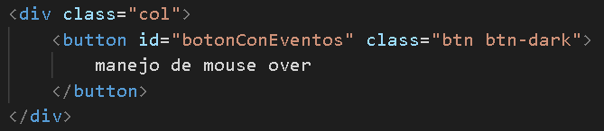

Manejando eventos
Una de las grandes utilidades que podemos aprovechar con javascript es el manejo de los distintos eventos que suceden a los distintos elementos presentes en el dom.
Formas de manejar los eventos
ver archivo "manejando-eventos.js"Existen dos formas básicas de manejar eventos que sucedan a los elementos del dom.
-
asignando las funciones en el código html
Se puede asignar directamente en la definición del elemento html utilizando el nombre del evento y asignando la funció que hará el manejo de dicho evento.
El input debajo del texto "manejo de focus" tiene un manejo del evento que ocurre al hacer foco dentro de dicho input. Cuando sucede el focus llamamos a la función manejadora focoEnElInput(elemento); definida en el archivomanejando-eventos.js. Si se mira en detalle a esta función, recibe por parámetro el propio elemento del dom que lo invoca y le aplica un estilo en especial.
El input debajo del texto "manejo de focus" tiene un manejo del evento que ocurre al perder el foco dentro de dicho input. Cuando sucede el blur llamamos a la función manejadora fueraFocoDelInput(elemento); definida en el archivomanejando-eventos.js. Si se mira en detalle a esta función, recibe por parámetro el propio elemento del dom que lo invoca y le aplica un estilo en especial. -
innerHtml
Con el botón "Usar innerHTML" llamamos a la función agregarInnerHTML(idElemento, html); definida en el archivoagregando-elementos-al-dom.js. Si se mira en detalle a esta función, lo que hace es acceder al elemento con id "divInnerHtml" y asigna un nuevo valor a la propiedad innerHTML del elemento. Esto hará que dentro del div se adicione el contenido asignado como html dentro del elemento.
El tercer botón que tenemos "Usar innerText para agregar html" expone que si se trata de asignar html a través la propiedad innerText, éste no se comportará como html, sino como texto.



Eventos de los elementos del DOM
Existen muchos eventos que se disparan en determinados momentos para los elementos del DOM. Estos eventos pueden ser manejados por nuestro código si les agregamos un manejador de evento al elemento en cuestión. A continuación tenemos una lista de algunos de lo eventos que se disparán y podemos manejar para los distintos elementos del DOM.
-
onblur - (al quitar el foco)
Devuelve el código de manejo de evento para el evento blur. -
onchange - (al modificar)
Devuelve el código de manejo de evento para el evento change. -
onclick - (al hacer clic)
Devuelve el código de manejo de evento para el evento onclick. -
ondblclick - (al hacer doble clic)
Devuelve el código de manejo de evento para el evento ondblclick. -
onfocus - (al poner el foco)
Devuelve el código de manejo de evento para el evento onfocus. -
onkeydown - (al tener una tecla apretada)
Devuelve el código de manejo de evento para el evento onkeydown. -
onkeypress - (al apretar una tecla)
Devuelve el código de manejo de evento para el evento onkeypress. -
onkeyup - (al soltar una tecla)
Devuelve el código de manejo de evento para el evento onkeyup. -
onmousedown - (al tener el botón del ratón apretado)
Devuelve el código de manejo de evento para el evento onmousedown. -
onmousemove - (al mover el ratón)
Devuelve el código de manejo de evento para el evento onmousemove. -
onmouseout - (al quitar el puntero del ratón)
Devuelve el código de manejo de evento para el evento onmouseout. -
onmouseover - (al pasar el ratón encima)
Devuelve el código de manejo de evento para el evento onmouseover. -
onmouseup - (al soltar el botón del ratón)
Devuelve el código de manejo de evento para el evento onmouseup. -
onresize - (al re-dimensionar la pantalla)
Devuelve el código de manejo de evento para el evento onresize.
Atributos de los eventos
Al manejar un evento la función encargada de dicha tarea recibirá un parámetro (que puede utilizarse o no) el cual refiere al objeto del evento disparado. Dicho evento se compone de varios atributos que brindan diferente información del evento. Los atributos del objeto evento son los siguientes:
-
event.altKey
Devuelve un valor indicando si la tecla
fue pulsada durante el evento. - event.bubbles Devuelve un valor que indica si el evento se propaga hacia arriba a través del DOM o no.
- event.button Devuelve el botón del ratón.
- event.cancelBubble Devuelve un valor que indica si la propagación hacia arriba fue cancelada o no.
- event.cancelable Devuelve un valor que indica si el evento se puede cancelar.
- event.charCode Devuelve el valor Unicode de una tecla de carácter que fue apretada como parte de un evento keypress.
- event.clientX Devuelve la posición horizontal del evento.
- event.clientY Devuelve la posición vertical del evento.
-
event.ctrlKey
Devuelve un valor que indica si la tecla
fue apretada durante el evento. - event.currentTarget Devuelve una referencia al objetivo actual registrado para el evento.
- event.detail Devuelve detalles sobre el evento, dependiendo del tipo de evento.
- event.eventPhase Utilizado para indicar qué fase del flujo del evento es actualmente en proceso de evaluación.
- event.explicitOriginalTarget El objetivo del evento (específico a Mozilla).
- event.isChar Devuelve un valor que indica si el evento produce o no una tecla de carácter.
- event.keyCode Devuelve el valor Unicode de una tecla que no es caracter en un evento keypress o cualquier tecla en cualquier otro tipo de evento de teclado.
- event.layerX Devuelve la coordenada horizontal del evento relativo a la capa actual.
- event.layerY Devuelve la coordenada vertical del evento relativo a la capa actual.
- event.metaKey Devuelve un valor booleano indicando si la meta tecla fue presionada durante un evento.
- event.originalTarget El objetivo principal de un evento, antes de cualquier reapunte (Especifiación Mozilla).
- event.pageX Devuelve la coordenada horizontal del evento, relativo al documento completo.
- event.pageY Devuelve la coordenada vertical del evento, relativo al documento completo.
- event.relatedTarget Identifica un objetivo secundario para el evento.
- event.screenX Devuelve la coordenada horizontal del evento en la pantalla.
- event.screenY Devuelve la coordenada vertical del evento en la pantalla.
-
event.shiftKey
Devuelve un valor booleano indicando si la tecla
fue presionada cuando el evento fue disparado. - event.target Devuelve una referencia al objetivo en la cual el evento fue originalmente enviado.
- event.timeStamp Devuelve el momento de creación del evento.
- event.type Devuelve el nombre del evento (distingue mayúsculas y minúsculas).
- event.view El atributo vista identifica la AbstractView del cual el evento fue generado.
- event.which Devuelve el valor Unicode de la tecla en un evento del teclado, sin importar el tipo de tecla que se presionó.